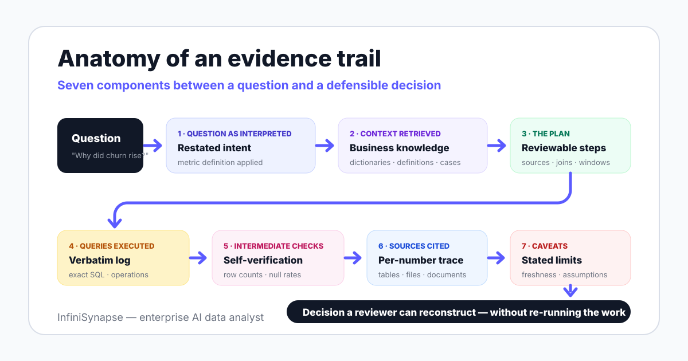

Imagine your AI tool reports that Q1 churn was 4.2%, and the number happens to be correct. If you cannot show which tables it queried, which churn definition it applied, and what it checked, that number still fails the three reviews that matter.
In a finance review, the controller asks for the calculation path before signing off. In a compliance audit, the auditor asks who ran what against which data, and "the AI did it" is not an accepted answer.
In a board deck, one unexplainable figure poisons the rest. The first time a director catches a number nobody can reconstruct, every later number from the same pipeline gets re-litigated.
A number you cannot reconstruct is not an asset. It is a liability with good formatting.
The teams adopting this standard are not doing it for elegance. They are doing it because AI now produces numbers faster than humans can independently re-derive them, so review has to move from re-computation to trail inspection.
Explainable AI is an established research field. The Wikipedia overview of XAI describes methods for making model predictions interpretable, IBM Research maintains an active explainability program, and the open-source AI Explainability 360 toolkit packages dozens of these techniques.
Almost all of that work targets one question: why did the model predict this? It explains feature attributions, decision boundaries, and training behavior — model internals.
When an AI data analyst reports last quarter's churn, the dangerous failure is rarely inside the language model's weights. It is a wrong join key, a stale metric definition, a silently empty table, or a time window that excluded the last three days.
So the explanation analytics teams need is workflow explainability: explain the plan, the queries, the sources, and the checks — not neuron weights. This distinction is the core argument of this page, and it changes what you should demand in procurement.
| Dimension | Model explainability (classic XAI) | Workflow explainability (analytics) |
|---|---|---|
| Question answered | Why did the model predict this? | How was this number produced? |
| Object explained | Feature attributions, weights, decision paths | Plan, queries, sources, checks, caveats |
| Typical audience | ML engineers, model risk teams | Analysts, controllers, auditors, executives |
| Typical failure caught | Biased or spurious feature reliance | Wrong join, stale definition, missing data |
| Tooling | Toolkits such as AI Explainability 360 | Plan review, query logs, evidence trails |
| What to buy | Relevant if you ship ML models | Required for any AI-generated analysis |
Both kinds matter in the right context, and they are complements rather than rivals. But if a vendor answers your explainability question with a saliency-map slide, they answered the wrong question.
An evidence trail is the artifact that makes AI analysis reviewable. The complete version has seven components, and each one exists to kill a specific reviewer question before it gets asked.

| Component | What it answers | Reviewer question it kills |
|---|---|---|
| 1. Question as interpreted | How the system restated your question, including the metric definition it applied | "Did it even understand what I asked?" |
| 2. Context retrieved | Which data dictionaries, metric definitions, and past cases informed the work | "Is this our definition of active user, or the model's guess?" |
| 3. The plan | Sources, join keys, filters, time windows, and output format — before execution | "Would I have designed this analysis the same way?" |
| 4. Queries executed | The verbatim queries and operations that actually ran | "What exactly touched the data, and with what permissions?" |
| 5. Intermediate checks | Row counts, null rates, and cross-computations the system ran on its own output | "Was this sanity-checked, or is it a first draft?" |
| 6. Sources cited | Which tables, files, and documents back each figure in the answer | "Can I trace this number to a system of record?" |
| 7. Caveats | Data freshness, assumptions, exclusions, and known gaps | "What would make this number wrong tomorrow?" |
Here is how the seven components map to a shipping product — InfiniSynapse, so the disclosure at the top of this page applies. The point of the example is the mapping, not the brand; run any vendor through the same rows.
Components 1 and 2 come from retrieval: InfiniSynapse recalls business knowledge and schema from a governed knowledge base built on data dictionaries, metric definitions, analysis playbooks, and past cases. Component 3 is Plan mode itself — the agent drafts an analysis plan, you review or adjust it, and only then does it execute.
Components 4 through 7 come from execution and delivery: queries run through an intermediate representation called InfiniSQL that connects to a multi-source execution layer, and every plan and result remains reviewable afterward. In a documented demo, this covers a cross-source case — joining JD and Tmall platform data with a CSV file by phone number — without an ETL project first.
What this does not solve: a trail records the workflow, but it cannot fix contested metric ownership or missing source data. If two departments disagree on what churn means, the trail will faithfully document the disagreement.
You do not need to be a lawyer to read the direction: documentation and transparency expectations for AI systems are rising on a published schedule. This section describes that direction; it is not legal advice, and your counsel should map specific obligations.
| Framework | Status | What it asks of AI-driven analytics |
|---|---|---|
| EU AI Act | Entered into force 2024-08-01; obligations phasing in through 2026-2027 | Risk-based duties including transparency and documentation for in-scope systems; scope depends on use case and risk class |
| NIST AI RMF 1.0 | Published 2023; voluntary | A govern-map-measure-manage structure; evidence trails are the artifact that the measure and manage functions inspect |
| ISO/IEC 42001:2023 | Published 2023; certifiable management standard | An AI management system with documented processes — auditors will ask how analysis outputs are produced and reviewed |
The practical takeaway is sequencing. Teams that adopt evidence trails now treat future compliance reviews as an export task; teams that bolt explainability on later will retrofit it under deadline.
There is also a softer force in the same direction: internal AI governance committees increasingly use these three frameworks as their rubric. Showing up to that committee with reviewable trails is the difference between a fast approval and a pilot freeze.
Use these eight questions in any pilot of an AI analytics tool. Score from what you can see in the product during a real run — not from the vendor's architecture slide.
| # | Question | Pass looks like | Red flag |
|---|---|---|---|
| 1 | Can a reviewer see the plan before execution? | Explicit, editable plan; nothing runs silently | Answers appear with no visible intermediate steps |
| 2 | Are queries logged verbatim? | Exact queries and operations, copyable, per run | A paraphrase like "queried the sales table" |
| 3 | Are sources attached to every number? | Each figure traces to tables, files, or documents | Citations only on the final summary, or none |
| 4 | Can you replay an analysis? | Re-run the same plan on demand and compare results | Results are one-off chat outputs with no rerun path |
| 5 | Is low confidence flagged? | The system marks ambiguous terms and uncertain results | Uniform confidence on every answer |
| 6 | Are corrections persisted? | A fixed definition applies to all future analyses | You re-explain the same correction every session |
| 7 | Who can access trails? | Role-based access; reviewers see trails without edit rights | Trails visible only to the person who asked |
| 8 | Can trails be exported for auditors? | Plans, queries, and checks export in a portable format | Evidence lives only inside the vendor UI |
Questions 1-3 test transparency, 4-6 test whether explainability survives contact with daily use, and 7-8 test whether it survives contact with your auditor. A tool can pass the first three in a demo and still fail the last five in production.
Some buyers treat explainability and accuracy as a trade-off. The benchmark data says you do not get to choose, because no current system is accurate enough to skip review.
On the BIRD text-to-SQL benchmark, human engineers reach 92.96% execution accuracy and models still trail that bar. Even the humans are wrong about 7% of the time — which is exactly why professional analysis has always shipped with workpapers.
What trails change is the unit economics of error. A wrong number with no trail costs a re-derivation, an escalation, and sometimes a bad decision; a wrong number with a trail costs one reviewer minute at the plan stage or one failed check at verification.
This is also where explainability connects to autonomy and memory. An autonomous data agent can only be trusted with scoped independence because its checks and escalations are visible in the trail, and an agent's memory layer turns each reviewed correction into a permanent improvement instead of a repeated conversation.
The two properties compound: verification raises accuracy, and the recorded verification is itself explainability. Systems built on the agent loop described in our data agent definition guide get both from the same architecture — which is the definition of agents that Anthropic's Building Effective Agents uses: models directing their own process and tool usage, observably.
Not every team needs the top level on day one. Use this ladder to state where you are, and where your risk profile says you need to be.
| Level | What you get | Reviewer effort | Fit |
|---|---|---|---|
| L1 · Black-box answer | A number or summary, no visible workings | Full re-derivation — trust or redo | Throwaway exploration only; never decisions |
| L2 · Cited answer | Answer plus named sources for the figures | Spot-check sources; logic still opaque | Low-stakes internal questions |
| L3 · Reviewable plan | Plan, queries, and checks visible and approvable before execution | Minutes per analysis, at the plan stage | Recurring business reporting, MOFU pilots |
| L4 · Replayable workflow | Full trail plus rerun, export, access control, and persisted corrections | Near zero per run; effort moves to governance | Finance, compliance, regulated decisions |
One honest caveat: trails add review surface, and a team that rubber-stamps every plan gets L1 trust at L4 cost. Pair the tooling with a norm that someone actually reads the plan on consequential analyses — the same discipline argued in our agentic analytics guide.
Connect a database or upload a file, ask one question you already know the answer to, and review the plan, the queries, the checks, and the caveats before the result. Then apply the eight-question checklist — to us first.
Try InfiniSynapse onlineLast updated: 2026-06-12 · Next scheduled review: 2026-09-12
The evidence-trail anatomy, checklist, and trust stack on this page are original frameworks built from explainability research (Wikipedia XAI, IBM Research, AI Explainability 360), governance frameworks (EU AI Act, NIST AI RMF 1.0, ISO/IEC 42001:2023), the BIRD benchmark, and published agent research. Product capabilities attributed to InfiniSynapse come from InfiniSynapse product documentation; the cross-source example is a documented product demonstration, not an independent benchmark.
Conflict of interest: InfiniSynapse publishes this guide and sells in the explainable analytics category. To reduce bias, the checklist and trust stack are vendor-neutral, the regulatory section avoids legal claims, and the page names cases where lower trust levels are honestly sufficient.
Update cadence: Reviewed every 90 days for regulatory dates, source links, benchmark figures, and schema consistency.